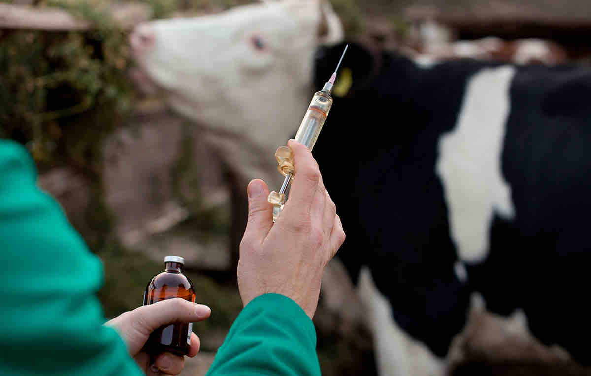
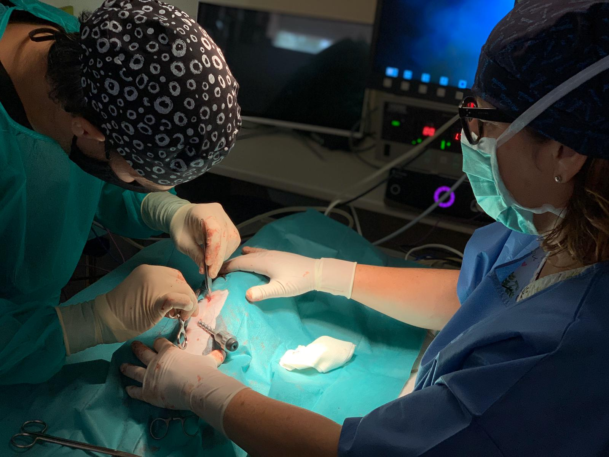

¡Hola! Soy VetIA, tu asistente especializado en bovinos. ¿En qué puedo ayudarte hoy?
Pensando...
Información sobre Bovinos

Dosis de Medicamentos
Las dosis de medicamentos para bovinos varían según la raza, peso y estado de salud. Es importante calcular la dosis adecuada para cada animal.
Consultar tablas de dosis →

Protocolos Quirúrgicos
Los protocolos quirúrgicos para bovinos incluyen procedimientos como cesáreas y descolas. Asegúrate de seguir las guías adecuadas para cada caso.
Ver protocolos quirúrgicos →Guía de Razas
Conoce las características y cuidados específicos de las diferentes razas de bovinos, como Holstein, Angus y Brahman.
Explorar razas →